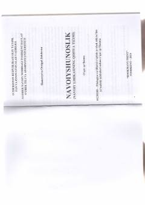

NLAlisher Navoiy lirikasi qofiya tizimining ilmiy-nazariy tahlili.
Ushbu asar Alisher Navoiy lirik merosidagi qofiya tizimining o'ziga xos xususiyatlari va nazariy asoslarini tahlil qiladi. Kitobda mumtoz she'riyatdagi qofiyalanish qoidalari va ularning Navoiy ijodidagi tatbiqi ilmiy nuqtai nazardan yoritilgan.